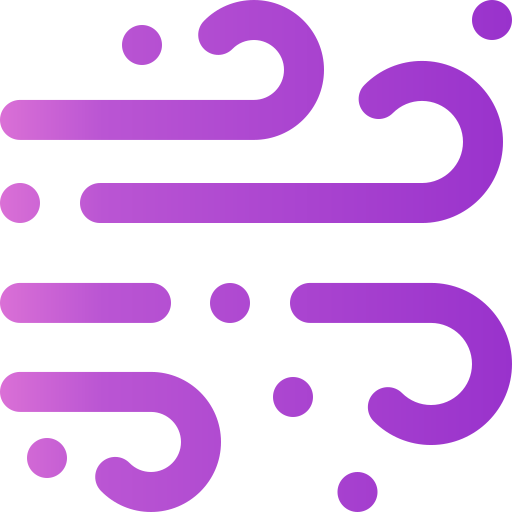

Easily learn and sample complex probability distributions with PyTorch
Simple but powerful
Design, train, and sample from complex probability distributions using only a few lines of code. Advanced features such as conditionality, caching, and structured representations are planned for future released.
Community focused
We help you be a successful user or contributor through detailed user, developer, and API guides. Educational tutorials and research benchmarks are planned for the future. We welcome your feedback!
Modular and extendable
Combine multiple bijections to form complex normalizing flows, and mix-and-match conditioning networks with bijections. FlowTorch has a well-defined interface so you easily create your own components!
Production ready
Proven code migrated from Pyro, with improved unit testing and continuous integration. And it is easy to add standard unit tests to components you write yourself!
- Bivariate Normal
import torchimport flowtorch.bijectors as Bimport flowtorch.distributions as Dimport flowtorch.parameters as P# Lazily instantiated flow plus base and target distributionsparams_fn = P.DenseAutoregressive(hidden_dims=(32,))bijectors = B.AffineAutoregressive(params_fn=params_fn)base_dist = torch.distributions.Independent(torch.distributions.Normal(torch.zeros(2), torch.ones(2)),1)target_dist = torch.distributions.Independent(torch.distributions.Normal(torch.zeros(2)+5, torch.ones(2)*0.5),1)# Instantiate transformed distribution and parametersflow = D.Flow(base_dist, bijectors)# Training loopopt = torch.optim.Adam(flow.parameters(), lr=5e-3)frame = 0for idx in range(3001):opt.zero_grad()# Minimize KL(p || q)y = target_dist.sample((1000,))loss = -flow.log_prob(y).mean()if idx % 500 == 0:print('epoch', idx, 'loss', loss)loss.backward()opt.step()